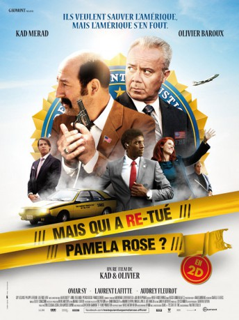
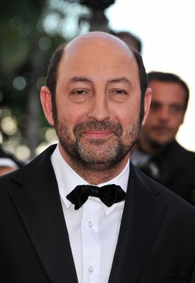
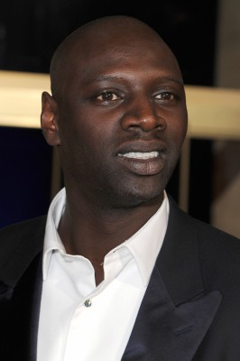
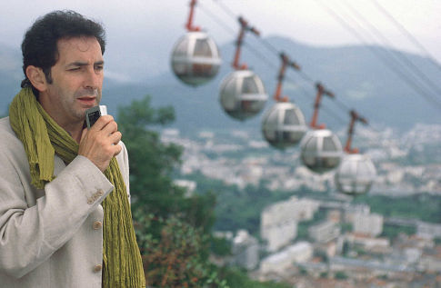
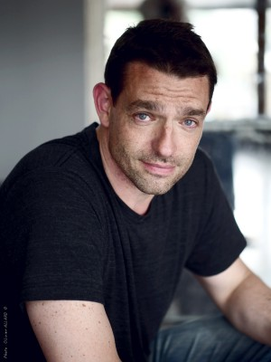

#2548 FBI
Alternativ: Mais qui a re-tué Pamela Rose?
 
 IMDB-Wertung: 5.3 / 10
IMDB-Wertung: 5.3 / 10  Metascore: 0
Metascore: 0 
When he receives a call from Bornsville sheriff, telling him Pamela Rose' coffin has been stolen, agent Douglas Riper sees a good occasion to meet again with his former partner Richard Bullit, that he hasn't seen for a long time. Both of them used to be stars of the FBI but are now completely out of the game, and this inquiry is in fact a trap set up by a guy who hates them big time. But none of them suspects that soon they are going to be the only ones to know that the President of the United States is on the verge of being murdered. Nothing less....
Jahr: 2012
Dauer: 90 Minuten
FSK: 12
Land: Frankreich Studio: Senator Home EntertainmentTonspuren: DTS - ,
Untertitel: Deutsch,
Auflösung: 1080p (1920x816) Größe: 5263 MB
Genre: Komödie
Regisseur: Olivier Baroux, Kad Merad
Drehbuch: Olivier Baroux, Kad Merad, Julien Rappeneau
Soundtrack: Hervé Rakotofiringa
Darsteller:
-  Kad Merad als Richard Bullit / Holk Logan
-  Omar Sy als Mosby
- Audrey Fleurot als La Présidente
-  François Morel als Le tunelier
- Olivia Gotanègre als Hôtesse
-  Nicolas Wanczycki als Ribiso
- Pete Postiglione als Pinzini
- Donald Imm als Officer Badu , uncredited
- Olivier Baroux als Douglas Riper / Julian Rappnow / Miriam
 Laurent Lafitte als Perkins
Laurent Lafitte als Perkins- Guy Lecluyse als Kowachek
- Philippe Lefebvre als Commandant de bord
- Laurence Arné als Linda
- Xavier Letourneur als Donuts
- Alain Doutey als Le président français
- Lionel Abelanski als
- Patrick Bosso als
- Alice Gingembre als Shirley
- Michel Feder als Le révérend
- Arielle Sémenoff als La première dame
- Jean-Paul Audrain als Le Général McChicken
- Jean-Michel Gratecap als Le chanteur des rues
 Vincent Haquin als Thunderkiller
Vincent Haquin als Thunderkiller- Charles Tallier als Shérif Ketchup
- Jean-Pierre Durand als Colonel Moutarde
- Arnaud Duléry als Lieutenant Tabasco
- Fanny Paliard als Agent FBI 1
- Nicolas Giraudi als Agent FBI 2
- Philippe Bruneau als Le co-détenu
- Florence Maury als Isabelle
- Jeanne Bournaud als Présentatrice TV
- Sébastien Thoen als Présentateur TV
- Jean-Claude Tran als Wang Chee
- Benjamin Gauthier als Journaliste français 1
- Renaud Dehesdin als Journaliste français 2
- Tania Dessources als Journaliste 1
- Reda Merad als Journaliste 2
- Olivia Forest als Journaliste 3
- Guy Savoy als Chef cuistot avion
- Erwan Creignou als Le comptable du film
- Alain Buron als Laurent Marcheret
- Guillaume Denis als Employé relooking
- Guillaume Clement als Ami Smalltown
- Erwan David als Voisin Smalltown 1
- Philippe Chaine als Voisin Smalltown 2
- Didier Nobletz als Gardien du pénitencier
- Ali Karamoko als Agent FBI ambulance
- Senén Rodríguez als L'homme qui fait Twickie le chien
- Xavier Pottier als Ferrailleur
- Mathieu Poggi als Technicien Air Force One 1
Datei: X:\2012(A-F)\FBI (2012, FSK12, 1920x816).mkv seit 21.11.2015
Festplatte: HD 2012(A-M)
 Es gibt insgesamt 102 Filme in der Gruppe '2012(A-F)'
Es gibt insgesamt 102 Filme in der Gruppe '2012(A-F)'